Some functions to know while building your ambiguity model through AHAB:
Function 1
Retrieve information from each ambiguity node.
- For each ambiguity node, you can do the following:
- Click on the ambiguity node Icon.
- You will be able to see the referenced highlighted text within the “Legal Text” box, and a filled-in “Ambiguity Attributes” Box.
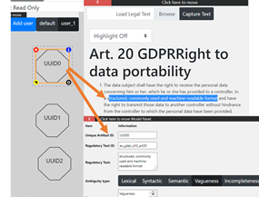
- Pull-up the “Ambiguity Node” Attributes using the “Blue information” Icon button in the top right-hand corner of a selected Icon.

Function 2
Split, Merge, Copy, and Delete an “Ambiguity Node”
- Split:
Split a Single “Ambiguity Node” into two identical nodes (If multiple ambiguities exist for the same selected text):
- Pull-up the “Ambiguity Icons” Attributes using the “Blue information” Icon button in the top right-hand corner of a selected Icon.
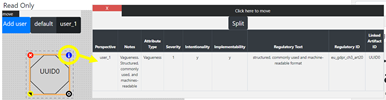
- Click on the “Split” button in the Attributes table.
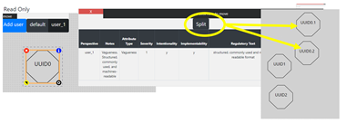
- Pull-up the “Ambiguity Icons” Attributes using the “Blue information” Icon button in the top right-hand corner of a selected Icon.
- Merge:
Merge two “Ambiguity Nodes” into one node:
- Select two different icons, and using “Yellow arrow” button in the bottom left-hand corner.
- Display both Ambiguity Icons attributes.
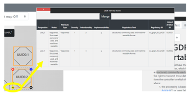
- Click “Merge” to merge them into a single Ambiguity Icon.
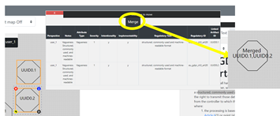
- Copy:
Copy an “Ambiguity” Icon using the “Black and White Circle” button on the bottom right-hand corner of a selected Ambiguity icon.
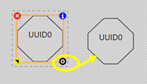
- Delete an “Ambiguity” Icon using the “Red and White X” button on the top left-hand corner of a selected Ambiguity icon.
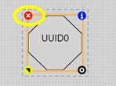
Function 3
Using Heat Map for Comparability between models:
Once a model is built, with multiple User Perspectives, Ambiguity Types, Severity, Intentionality, Implement ability, the tool will color code the different ambiguity attributes.
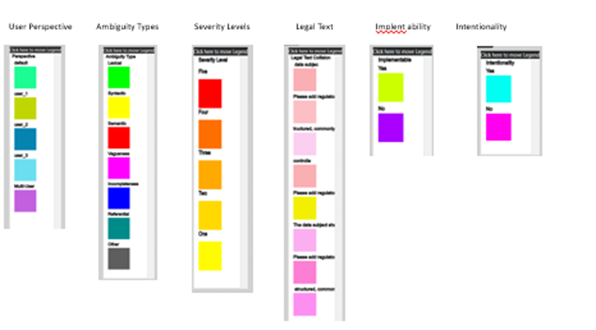
Example Screenshots comparing two imported models using the Heat Map:
- User Perspective Ambiguity Models
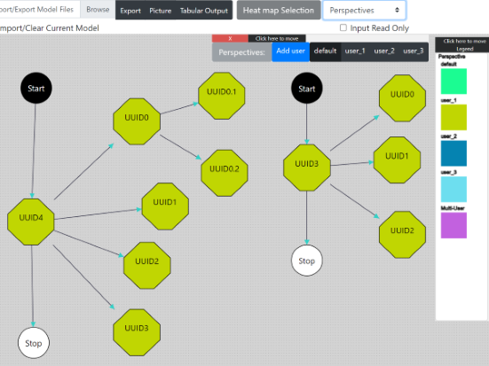
- Ambiguity Severity Levels
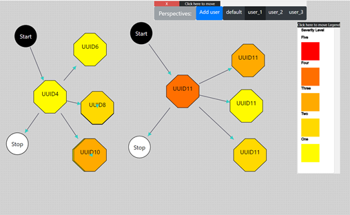
- Ambiguity Type
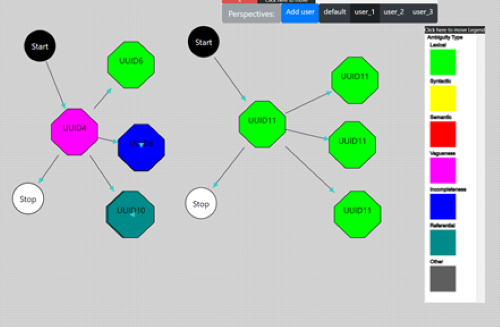
- Ambiguity Implement ability
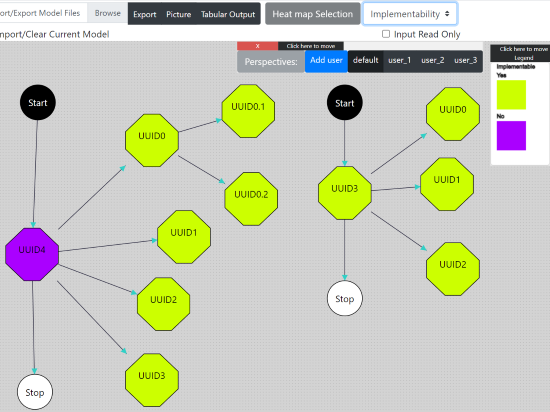
- Ambiguity Intentionality
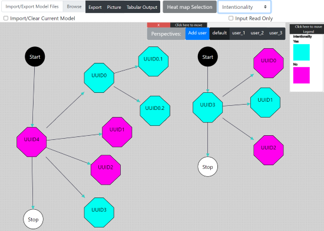
- Ambiguity Legal Text
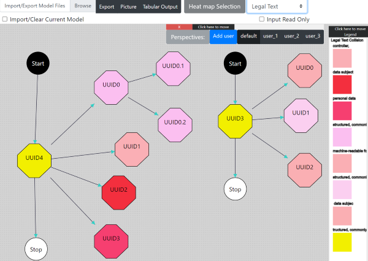